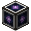
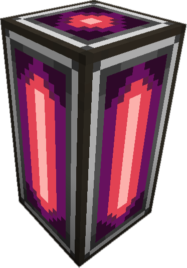

|  | Spatial Pylon |
The main block used to construct a Spatial Containment Structure, they must be built in straight lines, with a minium length of 2. When powered and on a network they will either glow a light purple, or a light red, if the color is light red, that indicates design has an issue and needs to be adjusted. They emitt a small amount of light when powered.
Only useful when used in conjunction with a Spatial IO Port, All Spatial Pylon in an ME Network are part of the came SCS.
Each Spatial Pylon Multiblock requires a channel ( 1 per strand of blocks, not 1 per Spatial Pylon ) to function.
|
Shaped
|
|
|
| Last modified on 03/12/2014 11:10 PM CDT By AlgorithmX2 |